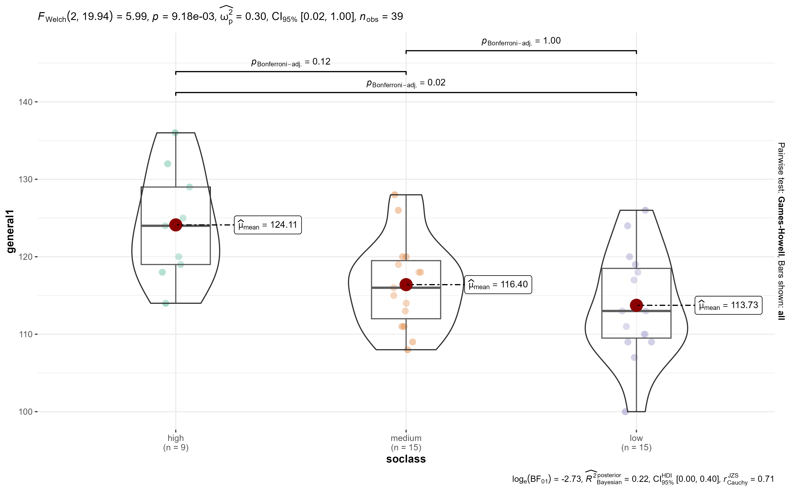
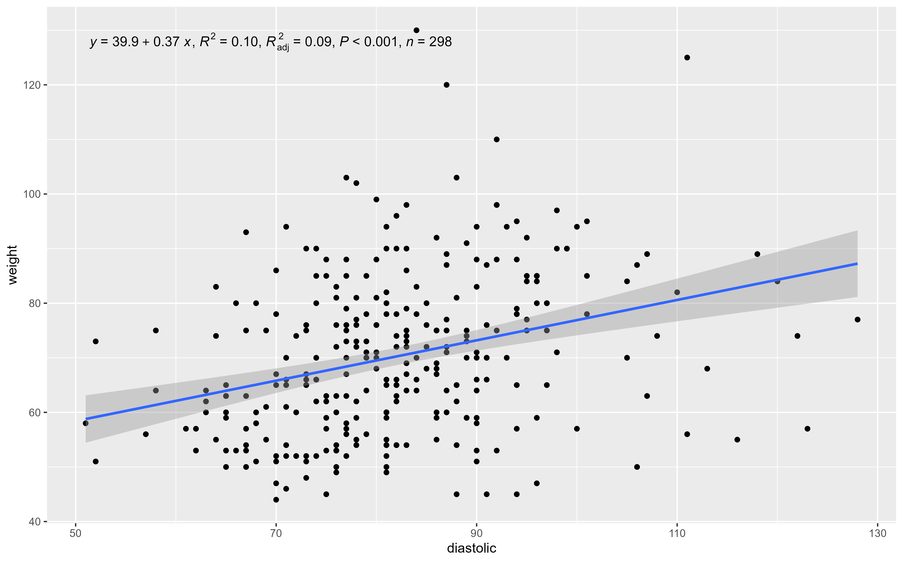
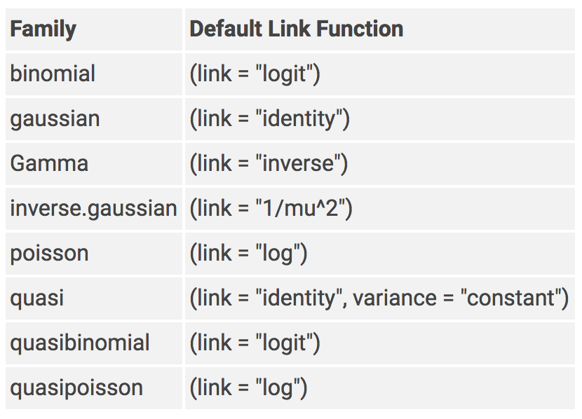
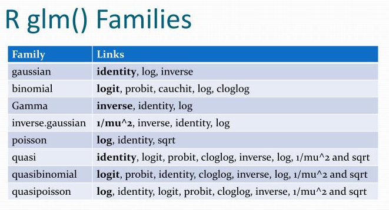
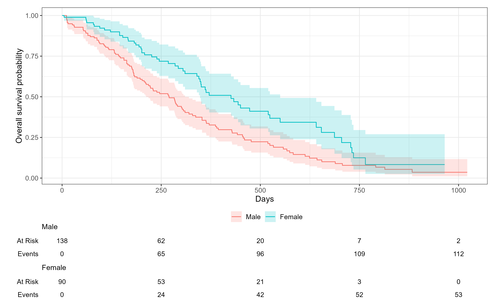
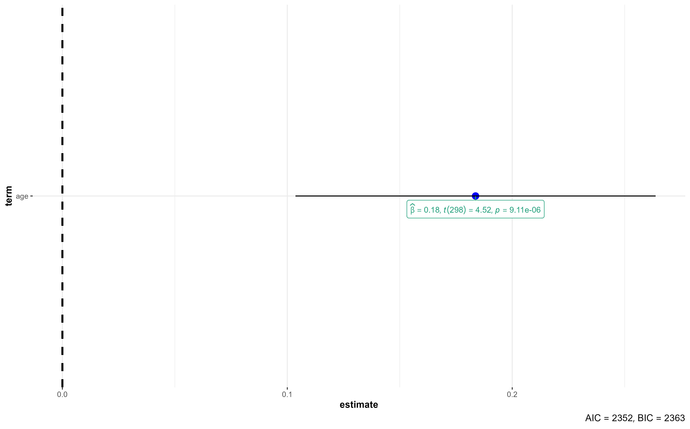
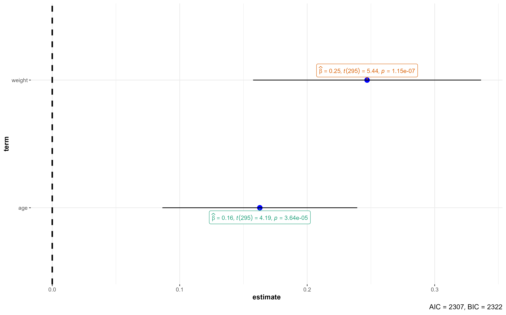
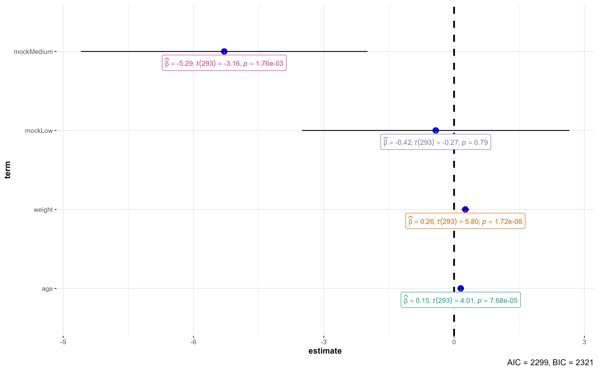

library(medicaldata) #Sample datasets
chisq.test(covid_testing$result, covid_testing$gender)
Pearson's Chi-squared test
data: covid_testing$result and covid_testing$gender
X-squared = 1.2028, df = 2, p-value = 0.5481Define the null hypothesis (H
Set the significance level (alpha) - usually 0.05
Get the test statistic with your sample data and the p-value
Interpret the p-value
library(tidyverse)
library(rio)
#develop datest
#Dataset with a development index at 5yo (general1) and 8yo (general2)
#Includes socioeconomic class variable, with value 1 = high, 2 = mewdium and 3 = low
#Import from github and create a factor
develop <- rio::import("https://github.com/c-matos/Intro-R4Heads/raw/main/materials/data/develop.rds") %>%
mutate(soclass = factor(soclass,
labels = c("high","medium","low"), #The labels that we see
levels = c(1,2,3), #the values that are coded
ordered = T)) # TRUE if the values have an inherent order e.g. high > medium > low
Paired t-test
data: develop$general1 and develop$general2
t = 4.0779, df = 38, p-value = 0.0002239
alternative hypothesis: true mean difference is not equal to 0
95 percent confidence interval:
2.233808 6.637987
sample estimates:
mean difference
4.435897 #Using the polyps data from the {medicaldata} package
library(medicaldata)
t.test(number12m ~ treatment, data = polyps)
Welch Two Sample t-test
data: number12m by treatment
t = 3.6114, df = 16.901, p-value = 0.002172
alternative hypothesis: true difference in means between group placebo and group sulindac is not equal to 0
95 percent confidence interval:
10.69898 40.79597
sample estimates:
mean in group placebo mean in group sulindac
35.636364 9.888889 Levene's Test for Homogeneity of Variance (center = median)
Df F value Pr(>F)
group 1 2.5663 0.1266
18
Two Sample t-test
data: number12m by treatment
t = 3.4449, df = 18, p-value = 0.00289
alternative hypothesis: true difference in means between group placebo and group sulindac is not equal to 0
95 percent confidence interval:
10.04479 41.45016
sample estimates:
mean in group placebo mean in group sulindac
35.636364 9.888889 #One sample t.test
t.test(x = a_vector, mu = some_value)
#Paired samples t.test
t.test(x = a_vector, y = other_vector, paired = TRUE)
#Independent samples t.test
t.test(num_vec ~ 2_levels_cat_vec, data = some_df, var.equal = T or F)
#Levene Test for homogeneity of variances
car::leveneTest(y = num_vec ~ 2_levels_cat_vec, data = some_df)Levene's Test for Homogeneity of Variance (center = median)
Df F value Pr(>F)
group 2 0.3116 0.7342
36
One-way analysis of means (not assuming equal variances)
data: general1 and soclass
F = 5.9897, num df = 2.000, denom df = 19.942, p-value = 0.009179Note
Remember that a p < alpha for the levene test and for the one-way ANOVA means at least one difference between groups. If that is the case, then pairwise comparisons need to be performed to identify which groups differ
Pairwise comparisons using t tests with pooled SD
data: develop$general1 and develop$soclass
high medium
medium 0.0250 -
low 0.0018 0.8172
P value adjustment method: bonferroni 
List of 7
$ subtitle_data : sttsExpr [1 × 14] (S3: statsExpressions/tbl_df/tbl/data.frame)
..$ statistic : num 5.99
..$ df : num 2
..$ df.error : num 19.9
..$ p.value : num 0.00918
..$ method : chr "One-way analysis of means (not assuming equal variances)"
..$ effectsize : chr "Omega2"
.. ..- attr(*, "na.action")= 'omit' int [1:3] 2 3 4
..$ estimate : num 0.303
..$ conf.level : num 0.95
..$ conf.low : num 0.0249
..$ conf.high : num 1
..$ conf.method : chr "ncp"
..$ conf.distribution: chr "F"
..$ n.obs : int 39
..$ expression :List of 1
$ caption_data : sttsExpr [6 × 17] (S3: statsExpressions/tbl_df/tbl/data.frame)
..$ term : chr [1:6] "mu" "soclass-high" "soclass-medium" "soclass-low" ...
..$ pd : num [1:6] 1 0.998 0.823 0.995 1 ...
..$ prior.distribution: chr [1:6] "cauchy" "cauchy" "cauchy" "cauchy" ...
..$ prior.location : num [1:6] 0 0 0 0 0 0
..$ prior.scale : num [1:6] 0.707 0.707 0.707 0.707 0.707 0.707
..$ bf10 : num [1:6] 15.4 15.4 15.4 15.4 15.4 ...
..$ method : chr [1:6] "Bayes factors for linear models" "Bayes factors for linear models" "Bayes factors for linear models" "Bayes factors for linear models" ...
..$ log_e_bf10 : num [1:6] 2.73 2.73 2.73 2.73 2.73 ...
..$ effectsize : chr [1:6] "Bayesian R-squared" "Bayesian R-squared" "Bayesian R-squared" "Bayesian R-squared" ...
..$ estimate : num [1:6] 0.222 0.222 0.222 0.222 0.222 ...
..$ std.dev : num [1:6] 0.12 0.12 0.12 0.12 0.12 ...
..$ conf.level : num [1:6] 0.95 0.95 0.95 0.95 0.95 0.95
..$ conf.low : num [1:6] 0 0 0 0 0 0
..$ conf.high : num [1:6] 0.39 0.39 0.39 0.39 0.39 ...
..$ conf.method : chr [1:6] "HDI" "HDI" "HDI" "HDI" ...
..$ n.obs : int [1:6] 39 39 39 39 39 39
..$ expression :List of 6
$ pairwise_comparisons_data: sttsExpr [3 × 9] (S3: statsExpressions/tbl_df/tbl/data.frame)
..$ group1 : chr [1:3] "high" "high" "medium"
..$ group2 : chr [1:3] "low" "medium" "low"
..$ statistic : num [1:3] -4.92 -3.87 -1.62
..$ p.value : num [1:3] 0.0237 0.1187 1
..$ alternative : chr [1:3] "two.sided" "two.sided" "two.sided"
..$ distribution : chr [1:3] "q" "q" "q"
..$ p.adjust.method: chr [1:3] "Bonferroni" "Bonferroni" "Bonferroni"
..$ test : chr [1:3] "Games-Howell" "Games-Howell" "Games-Howell"
..$ expression :List of 3
$ descriptive_data : NULL
$ one_sample_data : NULL
$ tidy_data : NULL
$ glance_data : NULL
\[
g(Y) = f(X,\beta)
\]
Why do we care about modelling?
Examples include linear regression, logistic regression, Poisson regresison, Cox regression
formula argument, to specify the column names of the variables used in the modeldata argument, to specify the dataset~ is used to create formulas
blood_pressure datasetRows: 300
Columns: 5
$ id <dbl> 5147, 2786, 3489, 5454, 3162, 2734, 5154, 5395, 5679, 3152, …
$ age <dbl> 35, 19, 26, 31, 26, 31, 68, 73, 59, 80, 49, 48, 54, 48, 48, …
$ weight <dbl> 81, 65, 78, 75, 92, 75, 76, 90, 72, 71, 64, 83, 75, 91, 78, …
$ systolic <dbl> 139, 116, 141, 135, 148, 136, 121, 129, 126, 167, 133, 117, …
$ diastolic <dbl> 78, 73, 94, 86, 86, 86, 76, 81, 78, 87, 84, 64, 97, 89, 82, …#Storing the model results in the "my_lm" object
my_lm <- lm(formula = systolic ~ age,
data = bp_dataset)
my_lm # Only shows the coefficients
Call:
lm(formula = systolic ~ age, data = bp_dataset)
Coefficients:
(Intercept) age
105.3207 0.6868 Explore the my_lm object with View(my_lm). What do you see?
Summary() shows more details about the model
Call:
lm(formula = systolic ~ age, data = bp_dataset)
Residuals:
Min 1Q Median 3Q Max
-49.95 -11.28 -2.40 10.71 74.16
Coefficients:
Estimate Std. Error t value Pr(>|t|)
(Intercept) 105.32075 3.02978 34.76 <2e-16 ***
age 0.68677 0.06242 11.00 <2e-16 ***
---
Signif. codes: 0 '***' 0.001 '**' 0.01 '*' 0.05 '.' 0.1 ' ' 1
Residual standard error: 18.59 on 298 degrees of freedom
Multiple R-squared: 0.2889, Adjusted R-squared: 0.2865
F-statistic: 121 on 1 and 298 DF, p-value: < 2.2e-16tidy() summarizes information about model componentsglance() reports information about the entire modelaugment() adds informations about observations to a dataset
# A tibble: 300 × 8
systolic age .fitted .resid .hat .sigma .cooksd .std.resid
<dbl> <dbl> <dbl> <dbl> <dbl> <dbl> <dbl> <dbl>
1 139 35 129. 9.64 0.00455 18.6 0.000618 0.520
2 116 19 118. -2.37 0.0112 18.6 0.0000930 -0.128
3 141 26 123. 17.8 0.00757 18.6 0.00354 0.963
4 135 31 127. 8.39 0.00567 18.6 0.000584 0.453
5 148 26 123. 24.8 0.00757 18.6 0.00686 1.34
6 136 31 127. 9.39 0.00567 18.6 0.000732 0.507
7 121 68 152. -31.0 0.00910 18.5 0.0129 -1.68
8 129 73 155. -26.5 0.0119 18.6 0.0124 -1.43
9 126 59 146. -19.8 0.00542 18.6 0.00312 -1.07
10 167 80 160. 6.74 0.0168 18.6 0.00114 0.366
# ℹ 290 more rows
Easy way to have finer control over what values are shown in the plot
#Let's change the dataset to add a mock categorical variable with 3 levels
#Randomly add the values "High", "Medium" or "Low" to a new variable
bp_dataset_mock <- bp_dataset %>%
mutate(mock = sample(c("High","Medium","Low"), 300, replace =T))
my_lm_mock <- lm(diastolic ~ age + weight + mock, data = bp_dataset_mock)
my_lm_mock %>% broom::tidy()# A tibble: 5 × 5
term estimate std.error statistic p.value
<chr> <dbl> <dbl> <dbl> <dbl>
1 (Intercept) 58.8 3.62 16.2 8.97e-43
2 age 0.154 0.0383 4.01 7.68e- 5
3 weight 0.260 0.0448 5.80 1.72e- 8
4 mockLow -0.423 1.56 -0.270 7.87e- 1
5 mockMedium -5.29 1.68 -3.16 1.76e- 3# A tibble: 4 × 5
term estimate std.error statistic p.value
<chr> <dbl> <dbl> <dbl> <dbl>
1 (Intercept) 58.7 9.67 6.07 0.00000000394
2 weight 0.230 0.141 1.63 0.103
3 age 0.137 0.206 0.666 0.506
4 weight:age 0.000381 0.00297 0.128 0.898 Instead of the
*, use the colon:for the interaction. What is the difference?
Instead of the
*, use the colon:for the interaction. What is the difference?
# A tibble: 2 × 5
term estimate std.error statistic p.value
<chr> <dbl> <dbl> <dbl> <dbl>
1 (Intercept) 72.3 1.68 43.0 2.04e-129
2 weight:age 0.00313 0.000479 6.53 2.82e- 10Note
With the *, the interaction parameters are automatically added individually to the model, as well as their interaction, while using : only the interaction is added to the model, thus allowing greater control of the final model.
. adds all the variables as predictorsmy_lm_all <- lm(diastolic ~ ., data = bp_dataset_mock) # the dot add all the variables as predictors
my_lm_all %>% broom::tidy()# A tibble: 7 × 5
term estimate std.error statistic p.value
<chr> <dbl> <dbl> <dbl> <dbl>
1 (Intercept) 24.8 3.73 6.64 1.50e-10
2 id -0.000156 0.000308 -0.507 6.13e- 1
3 age -0.103 0.0354 -2.92 3.77e- 3
4 weight 0.130 0.0363 3.60 3.79e- 4
5 systolic 0.403 0.0289 14.0 3.21e-34
6 mockLow -1.42 1.22 -1.16 2.45e- 1
7 mockMedium -3.22 1.31 -2.45 1.47e- 2. adds all the variables as predictors{MASS} package# A tibble: 6 × 5
term estimate std.error statistic p.value
<chr> <dbl> <dbl> <dbl> <dbl>
1 (Intercept) 24.7 3.72 6.63 1.58e-10
2 age -0.106 0.0351 -3.02 2.73e- 3
3 weight 0.129 0.0360 3.57 4.20e- 4
4 systolic 0.403 0.0288 14.0 2.81e-34
5 mockLow -1.41 1.22 -1.16 2.47e- 1
6 mockMedium -3.22 1.31 -2.46 1.45e- 2glm is used for generalized linear modelsfamily argument specifies the details of the glm modelcancer_data <- rio::import("data/cancer_data.xlsx")
logit_model <- glm(status ~ ., data = cancer_data,
family = "binomial")
logit_model %>% summary()
Call:
glm(formula = status ~ ., family = "binomial", data = cancer_data)
Coefficients:
Estimate Std. Error z value Pr(>|z|)
(Intercept) -0.7209579 1.5166269 -0.475 0.63452
age 0.0219774 0.0210127 1.046 0.29560
sex2 -1.0021949 0.3737194 -2.682 0.00733 **
ecog 0.7576818 0.2682974 2.824 0.00474 **
meal_cal 0.0001768 0.0004920 0.359 0.71928
---
Signif. codes: 0 '***' 0.001 '**' 0.01 '*' 0.05 '.' 0.1 ' ' 1
(Dispersion parameter for binomial family taken to be 1)
Null deviance: 206.72 on 179 degrees of freedom
Residual deviance: 186.09 on 175 degrees of freedom
AIC: 196.09
Number of Fisher Scoring iterations: 4glm()

Warning
If you don’t specify a family, it may use gaussian by default and your output will not be a logistic regression!
Note
Remember that the coefficients of a logistic model are the log of Odds Ratio
tidy() function that we want to exponentiate the coefficients# A tibble: 5 × 5
term estimate std.error statistic p.value
<chr> <dbl> <dbl> <dbl> <dbl>
1 (Intercept) -0.721 1.52 -0.475 0.635
2 age 0.0220 0.0210 1.05 0.296
3 sex2 -1.00 0.374 -2.68 0.00733
4 ecog 0.758 0.268 2.82 0.00474
5 meal_cal 0.000177 0.000492 0.359 0.719
# A tibble: 5 × 7
term estimate std.error statistic p.value conf.low conf.high
<chr> <dbl> <dbl> <dbl> <dbl> <dbl> <dbl>
1 (Intercept) 0.486 1.52 -0.475 0.635 0.0241 9.55
2 age 1.02 0.0210 1.05 0.296 0.981 1.07
3 sex2 0.367 0.374 -2.68 0.00733 0.174 0.760
4 ecog 2.13 0.268 2.82 0.00474 1.28 3.67
5 meal_cal 1.00 0.000492 0.359 0.719 0.999 1.00 Warning
R will NOT tell you IF you should exponentiate or not. You could also (wrongly) exponentiate the coefficients of a linear model. You have to know in which situation it makes sense to exponentiate.
library(survival)
library(ggsurvfit)
lung_data <- lung %>%
mutate(sex = factor(sex, levels = c(1,2), labels = c("Male","Female")))
lung_data inst time status age sex ph.ecog ph.karno pat.karno meal.cal wt.loss
1 3 306 2 74 Male 1 90 100 1175 NA
2 3 455 2 68 Male 0 90 90 1225 15
3 3 1010 1 56 Male 0 90 90 NA 15
4 5 210 2 57 Male 1 90 60 1150 11
5 1 883 2 60 Male 0 100 90 NA 0
6 12 1022 1 74 Male 1 50 80 513 0
7 7 310 2 68 Female 2 70 60 384 10
8 11 361 2 71 Female 2 60 80 538 1
9 1 218 2 53 Male 1 70 80 825 16
10 7 166 2 61 Male 2 70 70 271 34
11 6 170 2 57 Male 1 80 80 1025 27
12 16 654 2 68 Female 2 70 70 NA 23
13 11 728 2 68 Female 1 90 90 NA 5
14 21 71 2 60 Male NA 60 70 1225 32
15 12 567 2 57 Male 1 80 70 2600 60
16 1 144 2 67 Male 1 80 90 NA 15
17 22 613 2 70 Male 1 90 100 1150 -5
18 16 707 2 63 Male 2 50 70 1025 22
19 1 61 2 56 Female 2 60 60 238 10
20 21 88 2 57 Male 1 90 80 1175 NA
21 11 301 2 67 Male 1 80 80 1025 17
22 6 81 2 49 Female 0 100 70 1175 -8
23 11 624 2 50 Male 1 70 80 NA 16
24 15 371 2 58 Male 0 90 100 975 13
25 12 394 2 72 Male 0 90 80 NA 0
26 12 520 2 70 Female 1 90 80 825 6
27 4 574 2 60 Male 0 100 100 1025 -13
28 13 118 2 70 Male 3 60 70 1075 20
29 13 390 2 53 Male 1 80 70 875 -7
30 1 12 2 74 Male 2 70 50 305 20
31 12 473 2 69 Female 1 90 90 1025 -1
32 1 26 2 73 Male 2 60 70 388 20
33 7 533 2 48 Male 2 60 80 NA -11
34 16 107 2 60 Female 2 50 60 925 -15
35 12 53 2 61 Male 2 70 100 1075 10
36 1 122 2 62 Female 2 50 50 1025 NA
37 22 814 2 65 Male 2 70 60 513 28
38 15 965 1 66 Female 1 70 90 875 4
39 1 93 2 74 Male 2 50 40 1225 24
40 1 731 2 64 Female 1 80 100 1175 15
41 5 460 2 70 Male 1 80 60 975 10
42 11 153 2 73 Female 2 60 70 1075 11
43 10 433 2 59 Female 0 90 90 363 27
44 12 145 2 60 Female 2 70 60 NA NA
45 7 583 2 68 Male 1 60 70 1025 7
46 7 95 2 76 Female 2 60 60 625 -24
47 1 303 2 74 Male 0 90 70 463 30
48 3 519 2 63 Male 1 80 70 1025 10
49 13 643 2 74 Male 0 90 90 1425 2
50 22 765 2 50 Female 1 90 100 1175 4
51 3 735 2 72 Female 1 90 90 NA 9
52 12 189 2 63 Male 0 80 70 NA 0
53 21 53 2 68 Male 0 90 100 1025 0
54 1 246 2 58 Male 0 100 90 1175 7
55 6 689 2 59 Male 1 90 80 1300 15
56 1 65 2 62 Male 0 90 80 725 NA
57 5 5 2 65 Female 0 100 80 338 5
58 22 132 2 57 Male 2 70 60 NA 18
59 3 687 2 58 Female 1 80 80 1225 10
60 1 345 2 64 Female 1 90 80 1075 -3
61 22 444 2 75 Female 2 70 70 438 8
62 12 223 2 48 Male 1 90 80 1300 68
63 21 175 2 73 Male 1 80 100 1025 NA
64 11 60 2 65 Female 1 90 80 1025 0
65 3 163 2 69 Male 1 80 60 1125 0
66 3 65 2 68 Male 2 70 50 825 8
67 16 208 2 67 Female 2 70 NA 538 2
68 5 821 1 64 Female 0 90 70 1025 3
69 22 428 2 68 Male 0 100 80 1039 0
70 6 230 2 67 Male 1 80 100 488 23
71 13 840 1 63 Male 0 90 90 1175 -1
72 3 305 2 48 Female 1 80 90 538 29
73 5 11 2 74 Male 2 70 100 1175 0
74 2 132 2 40 Male 1 80 80 NA 3
75 21 226 2 53 Female 1 90 80 825 3
76 12 426 2 71 Female 1 90 90 1075 19
77 1 705 2 51 Female 0 100 80 1300 0
78 6 363 2 56 Female 1 80 70 1225 -2
79 3 11 2 81 Male 0 90 NA 731 15
80 1 176 2 73 Male 0 90 70 169 30
81 4 791 2 59 Male 0 100 80 768 5
82 13 95 2 55 Male 1 70 90 1500 15
83 11 196 1 42 Male 1 80 80 1425 8
84 21 167 2 44 Female 1 80 90 588 -1
85 16 806 1 44 Male 1 80 80 1025 1
86 6 284 2 71 Male 1 80 90 1100 14
87 22 641 2 62 Female 1 80 80 1150 1
88 21 147 2 61 Male 0 100 90 1175 4
89 13 740 1 44 Female 1 90 80 588 39
90 1 163 2 72 Male 2 70 70 910 2
91 11 655 2 63 Male 0 100 90 975 -1
92 22 239 2 70 Male 1 80 100 NA 23
93 5 88 2 66 Male 1 90 80 875 8
94 10 245 2 57 Female 1 80 60 280 14
95 1 588 1 69 Female 0 100 90 NA 13
96 12 30 2 72 Male 2 80 60 288 7
97 3 179 2 69 Male 1 80 80 NA 25
98 12 310 2 71 Male 1 90 100 NA 0
99 11 477 2 64 Male 1 90 100 910 0
100 3 166 2 70 Female 0 90 70 NA 10
101 1 559 1 58 Female 0 100 100 710 15
102 6 450 2 69 Female 1 80 90 1175 3
103 13 364 2 56 Male 1 70 80 NA 4
104 6 107 2 63 Male 1 90 70 NA 0
105 13 177 2 59 Male 2 50 NA NA 32
106 12 156 2 66 Male 1 80 90 875 14
107 26 529 1 54 Female 1 80 100 975 -3
108 1 11 2 67 Male 1 90 90 925 NA
109 21 429 2 55 Male 1 100 80 975 5
110 3 351 2 75 Female 2 60 50 925 11
111 13 15 2 69 Male 0 90 70 575 10
112 1 181 2 44 Male 1 80 90 1175 5
113 10 283 2 80 Male 1 80 100 1030 6
114 3 201 2 75 Female 0 90 100 NA 1
115 6 524 2 54 Female 1 80 100 NA 15
116 1 13 2 76 Male 2 70 70 413 20
117 3 212 2 49 Male 2 70 60 675 20
118 1 524 2 68 Male 2 60 70 1300 30
119 16 288 2 66 Male 2 70 60 613 24
120 15 363 2 80 Male 1 80 90 346 11
121 22 442 2 75 Male 0 90 90 NA 0
122 26 199 2 60 Female 2 70 80 675 10
123 3 550 2 69 Female 1 70 80 910 0
124 11 54 2 72 Male 2 60 60 768 -3
125 1 558 2 70 Male 0 90 90 1025 17
126 22 207 2 66 Male 1 80 80 925 20
127 7 92 2 50 Male 1 80 60 1075 13
128 12 60 2 64 Male 1 80 90 993 0
129 16 551 1 77 Female 2 80 60 750 28
130 12 543 1 48 Female 0 90 60 NA 4
131 4 293 2 59 Female 1 80 80 925 52
132 16 202 2 53 Male 1 80 80 NA 20
133 6 353 2 47 Male 0 100 90 1225 5
134 13 511 1 55 Female 1 80 70 NA 49
135 1 267 2 67 Male 0 90 70 313 6
136 22 511 1 74 Female 2 60 40 96 37
137 12 371 2 58 Female 1 80 70 NA 0
138 13 387 2 56 Male 2 80 60 1075 NA
139 1 457 2 54 Male 1 90 90 975 -5
140 5 337 2 56 Male 0 100 100 1500 15
141 21 201 2 73 Female 2 70 60 1225 -16
142 3 404 1 74 Male 1 80 70 413 38
143 26 222 2 76 Male 2 70 70 1500 8
144 1 62 2 65 Female 1 80 90 1075 0
145 11 458 1 57 Male 1 80 100 513 30
146 26 356 1 53 Female 1 90 90 NA 2
147 16 353 2 71 Male 0 100 80 775 2
148 16 163 2 54 Male 1 90 80 1225 13
149 12 31 2 82 Male 0 100 90 413 27
150 13 340 2 59 Female 0 100 90 NA 0
151 13 229 2 70 Male 1 70 60 1175 -2
152 22 444 1 60 Male 0 90 100 NA 7
153 5 315 1 62 Female 0 90 90 NA 0
154 16 182 2 53 Female 1 80 60 NA 4
155 32 156 2 55 Male 2 70 30 1025 10
156 NA 329 2 69 Male 2 70 80 713 20
157 26 364 1 68 Female 1 90 90 NA 7
158 4 291 2 62 Male 2 70 60 475 27
159 12 179 2 63 Male 1 80 70 538 -2
160 1 376 1 56 Female 1 80 90 825 17
161 32 384 1 62 Female 0 90 90 588 8
162 10 268 2 44 Female 1 90 100 2450 2
163 11 292 1 69 Male 2 60 70 2450 36
164 6 142 2 63 Male 1 90 80 875 2
165 7 413 1 64 Male 1 80 70 413 16
166 16 266 1 57 Female 0 90 90 1075 3
167 11 194 2 60 Female 1 80 60 NA 33
168 21 320 2 46 Male 0 100 100 860 4
169 6 181 2 61 Male 1 90 90 730 0
170 12 285 2 65 Male 0 100 90 1025 0
171 13 301 1 61 Male 1 90 100 825 2
172 2 348 2 58 Female 0 90 80 1225 10
173 2 197 2 56 Male 1 90 60 768 37
174 16 382 1 43 Female 0 100 90 338 6
175 1 303 1 53 Male 1 90 80 1225 12
176 13 296 1 59 Female 1 80 100 1025 0
177 1 180 2 56 Male 2 60 80 1225 -2
178 13 186 2 55 Female 1 80 70 NA NA
179 1 145 2 53 Female 1 80 90 588 13
180 7 269 1 74 Female 0 100 100 588 0
181 13 300 1 60 Male 0 100 100 975 5
182 1 284 1 39 Male 0 100 90 1225 -5
183 16 350 2 66 Female 0 90 100 1025 NA
184 32 272 1 65 Female 1 80 90 NA -1
185 12 292 1 51 Female 0 90 80 1225 0
186 12 332 1 45 Female 0 90 100 975 5
187 2 285 2 72 Female 2 70 90 463 20
188 3 259 1 58 Male 0 90 80 1300 8
189 15 110 2 64 Male 1 80 60 1025 12
190 22 286 2 53 Male 0 90 90 1225 8
191 16 270 2 72 Male 1 80 90 488 14
192 16 81 2 52 Male 2 60 70 1075 NA
193 12 131 2 50 Male 1 90 80 513 NA
194 1 225 1 64 Male 1 90 80 825 33
195 22 269 2 71 Male 1 90 90 1300 -2
196 12 225 1 70 Male 0 100 100 1175 6
197 32 243 1 63 Female 1 80 90 825 0
198 21 279 1 64 Male 1 90 90 NA 4
199 1 276 1 52 Female 0 100 80 975 0
200 32 135 2 60 Male 1 90 70 1275 0
201 15 79 2 64 Female 1 90 90 488 37
202 22 59 2 73 Male 1 60 60 2200 5
203 32 240 1 63 Female 0 90 100 1025 0
204 3 202 1 50 Female 0 100 100 635 1
205 26 235 1 63 Female 0 100 90 413 0
206 33 105 2 62 Male 2 NA 70 NA NA
207 5 224 1 55 Female 0 80 90 NA 23
208 13 239 2 50 Female 2 60 60 1025 -3
209 21 237 1 69 Male 1 80 70 NA NA
210 33 173 1 59 Female 1 90 80 NA 10
211 1 252 1 60 Female 0 100 90 488 -2
212 6 221 1 67 Male 1 80 70 413 23
213 15 185 1 69 Male 1 90 70 1075 0
214 11 92 1 64 Female 2 70 100 NA 31
215 11 13 2 65 Male 1 80 90 NA 10
216 11 222 1 65 Male 1 90 70 1025 18
217 13 192 1 41 Female 1 90 80 NA -10
218 21 183 2 76 Male 2 80 60 825 7
219 11 211 1 70 Female 2 70 30 131 3
220 2 175 1 57 Female 0 80 80 725 11
221 22 197 1 67 Male 1 80 90 1500 2
222 11 203 1 71 Female 1 80 90 1025 0
223 1 116 2 76 Male 1 80 80 NA 0
224 1 188 1 77 Male 1 80 60 NA 3
225 13 191 1 39 Male 0 90 90 2350 -5
226 32 105 1 75 Female 2 60 70 1025 5
227 6 174 1 66 Male 1 90 100 1075 1
228 22 177 1 58 Female 1 80 90 1060 0
time argument is the total follow up timetime can be the start date of the follow up, and time2 can be the end date of follow upevent argument is 1 or 0 if the event occurred or not, respectivelysurvdiff() can be used to perfom a log rank test for differences in survival curvescox_model <- coxph(Surv(time, status) ~ sex + ph.ecog + wt.loss, data = lung_data)
summary(cox_model) Call:
coxph(formula = Surv(time, status) ~ sex + ph.ecog + wt.loss,
data = lung_data)
n= 213, number of events= 151
(15 observations deleted due to missingness)
coef exp(coef) se(coef) z Pr(>|z|)
sexFemale -0.588819 0.554983 0.174878 -3.367 0.00076 ***
ph.ecog 0.543620 1.722231 0.123701 4.395 1.11e-05 ***
wt.loss -0.008753 0.991285 0.006497 -1.347 0.17787
---
Signif. codes: 0 '***' 0.001 '**' 0.01 '*' 0.05 '.' 0.1 ' ' 1
exp(coef) exp(-coef) lower .95 upper .95
sexFemale 0.5550 1.8019 0.3939 0.7819
ph.ecog 1.7222 0.5806 1.3514 2.1948
wt.loss 0.9913 1.0088 0.9787 1.0040
Concordance= 0.646 (se = 0.027 )
Likelihood ratio test= 29.05 on 3 df, p=2e-06
Wald test = 28.84 on 3 df, p=2e-06
Score (logrank) test = 29.29 on 3 df, p=2e-06library(lme4)
# Reaction time per day (in milliseconds) for subjects in a sleep deprivation study
sleepstudy %>% as_tibble()# A tibble: 180 × 3
Reaction Days Subject
<dbl> <dbl> <fct>
1 250. 0 308
2 259. 1 308
3 251. 2 308
4 321. 3 308
5 357. 4 308
6 415. 5 308
7 382. 6 308
8 290. 7 308
9 431. 8 308
10 466. 9 308
# ℹ 170 more rowsLinear mixed model fit by REML ['lmerMod']
Formula: Reaction ~ Days + (Days | Subject)
Data: sleepstudy
REML criterion at convergence: 1743.6
Scaled residuals:
Min 1Q Median 3Q Max
-3.9536 -0.4634 0.0231 0.4634 5.1793
Random effects:
Groups Name Variance Std.Dev. Corr
Subject (Intercept) 612.10 24.741
Days 35.07 5.922 0.07
Residual 654.94 25.592
Number of obs: 180, groups: Subject, 18
Fixed effects:
Estimate Std. Error t value
(Intercept) 251.405 6.825 36.838
Days 10.467 1.546 6.771
Correlation of Fixed Effects:
(Intr)
Days -0.138We fitted a linear mixed model (estimated using REML and nloptwrap optimizer)
to predict Reaction with Days (formula: Reaction ~ Days). The model included
Days as random effects (formula: ~Days | Subject). The model's total
explanatory power is substantial (conditional R2 = 0.80) and the part related
to the fixed effects alone (marginal R2) is of 0.28. The model's intercept,
corresponding to Days = 0, is at 251.41 (95% CI [237.94, 264.87], t(174) =
36.84, p < .001). Within this model:
- The effect of Days is statistically significant and positive (beta = 10.47,
95% CI [7.42, 13.52], t(174) = 6.77, p < .001; Std. beta = 0.54, 95% CI [0.38,
0.69])
Standardized parameters were obtained by fitting the model on a standardized
version of the dataset. 95% Confidence Intervals (CIs) and p-values were
computed using a Wald t-distribution approximation.Effect sizes were labelled following Cohen's (1988) recommendations.
The One Sample t-test testing the difference between women$height * 2.54 (mean
= 165.10) and mu = 180 suggests that the effect is negative, statistically
significant, and large (difference = -14.90, 95% CI [158.81, 171.39], t(14) =
-5.08, p < .001; Cohen's d = -1.31, 95% CI [-2.00, -0.60])We fitted a linear model (estimated using OLS) to predict diastolic with id,
age, weight, systolic and mock (formula: diastolic ~ id + age + weight +
systolic + mock). The model explains a statistically significant and
substantial proportion of variance (R2 = 0.51, F(6, 291) = 50.46, p < .001,
adj. R2 = 0.50). The model's intercept, corresponding to id = 0, age = 0,
weight = 0, systolic = 0 and mock = High, is at 24.78 (95% CI [17.44, 32.12],
t(291) = 6.64, p < .001). Within this model:
- The effect of id is statistically non-significant and negative (beta =
-1.56e-04, 95% CI [-7.61e-04, 4.49e-04], t(291) = -0.51, p = 0.613; Std. beta =
-0.02, 95% CI [-0.10, 0.06])
- The effect of age is statistically significant and negative (beta = -0.10,
95% CI [-0.17, -0.03], t(291) = -2.92, p = 0.004; Std. beta = -0.14, 95% CI
[-0.24, -0.05])
- The effect of weight is statistically significant and positive (beta = 0.13,
95% CI [0.06, 0.20], t(291) = 3.60, p < .001; Std. beta = 0.15, 95% CI [0.07,
0.24])
- The effect of systolic is statistically significant and positive (beta =
0.40, 95% CI [0.35, 0.46], t(291) = 13.95, p < .001; Std. beta = 0.71, 95% CI
[0.61, 0.81])
- The effect of mock [Low] is statistically non-significant and negative (beta
= -1.42, 95% CI [-3.81, 0.98], t(291) = -1.16, p = 0.245; Std. beta = -0.11,
95% CI [-0.31, 0.08])
- The effect of mock [Medium] is statistically significant and negative (beta =
-3.22, 95% CI [-5.80, -0.64], t(291) = -2.45, p = 0.015; Std. beta = -0.26, 95%
CI [-0.47, -0.05])
Standardized parameters were obtained by fitting the model on a standardized
version of the dataset. 95% Confidence Intervals (CIs) and p-values were
computed using a Wald t-distribution approximation.We fitted a logistic model (estimated using ML) to predict status with age,
sex, ecog and meal_cal (formula: status ~ age + sex + ecog + meal_cal). The
model's explanatory power is weak (Tjur's R2 = 0.12). The model's intercept,
corresponding to age = 0, sex = 1, ecog = 0 and meal_cal = 0, is at -0.72 (95%
CI [-3.73, 2.26], p = 0.635). Within this model:
- The effect of age is statistically non-significant and positive (beta = 0.02,
95% CI [-0.02, 0.06], p = 0.296; Std. beta = 0.20, 95% CI [-0.18, 0.58])
- The effect of sex [2] is statistically significant and negative (beta =
-1.00, 95% CI [-1.75, -0.27], p = 0.007; Std. beta = -1.00, 95% CI [-1.75,
-0.27])
- The effect of ecog is statistically significant and positive (beta = 0.76,
95% CI [0.24, 1.30], p = 0.005; Std. beta = 0.56, 95% CI [0.18, 0.96])
- The effect of meal cal is statistically non-significant and positive (beta =
1.77e-04, 95% CI [-7.66e-04, 1.18e-03], p = 0.719; Std. beta = 0.07, 95% CI
[-0.31, 0.47])
Standardized parameters were obtained by fitting the model on a standardized
version of the dataset. 95% Confidence Intervals (CIs) and p-values were
computed using a Wald z-distribution approximation.What if you wanted to explore 2, or 5, or 50 models? Would you have to write them all manually?
e.g.
“diastolic ~ age”,
“diastolic ~ age + weight”,
“diastolic ~ age + weight + mock”
#First, create a vector with the desired model formulas
formulas <- c("diastolic ~ age",
"diastolic ~ age + weight",
"diastolic ~ age + weight + mock")
#For each model in the "formulas" vector, do something...
for (i in formulas) {
model_x <- lm(i, data = bp_dataset_mock) #Create the model
print(broom::tidy(model_x)) #Print the output
plot(ggcoefstats(model_x, exclude.intercept = T)) #Plot the coefficients
}# A tibble: 2 × 5
term estimate std.error statistic p.value
<chr> <dbl> <dbl> <dbl> <dbl>
1 (Intercept) 74.1 1.97 37.5 6.59e-115
2 age 0.184 0.0407 4.52 9.11e- 6
# A tibble: 3 × 5
term estimate std.error statistic p.value
<chr> <dbl> <dbl> <dbl> <dbl>
1 (Intercept) 57.5 3.58 16.1 4.05e-42
2 age 0.163 0.0388 4.19 3.64e- 5
3 weight 0.247 0.0454 5.44 1.15e- 7
# A tibble: 5 × 5
term estimate std.error statistic p.value
<chr> <dbl> <dbl> <dbl> <dbl>
1 (Intercept) 58.8 3.62 16.2 8.97e-43
2 age 0.154 0.0383 4.01 7.68e- 5
3 weight 0.260 0.0448 5.80 1.72e- 8
4 mockLow -0.423 1.56 -0.270 7.87e- 1
5 mockMedium -5.29 1.68 -3.16 1.76e- 3


Carlos Matos // ISPUP::R4HEADS(2023)